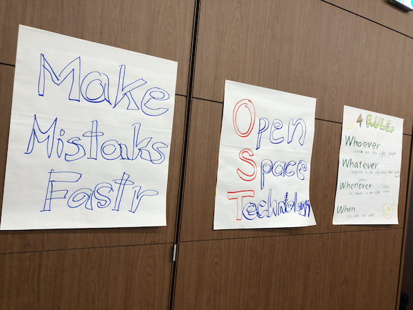

RSGT2019 に一般参加してきました。
はじめての投稿です。
1/9〜11まで、Regional Scrum Gathering Tokyo 2019に一般として参加してきましたので、その感想についてつらつら書いてみたいと思います。
@nemorineさん誘っていただいてほんとありがとうございました！
今回始めて参加させていただき、かつスクラムに関してはほぼ全く素人ですが、インプットアウトプットがこの３日間でぐるぐる回っていて、非常に充実した密度の濃い時間でした。今は脳内でまだ炭酸がシュワシュワ鳴っているような感じです。
講演内容についてはスライド等にまとめていただいている記事があるようなのでそちらにお任せするとして、自分的に学んだことや気づいたポイントなどを整理してみたいと思います。
インプットを自分の頭で考えてアウトプットするまでを体験できるイベント
公演を聞いてるだけというわけではなくて、参加者の一人ひとりがそれを聞いてどう思ったかをアウトプットできたり、今まで抱えていた悩みを相談したりできる環境が整理されていて、運営者様方の工夫を感じるイベントでした。
場外に貼られたfun done learnのボードであったり、複数用意されたワークショップ、休憩時間に登壇者を誰でも効率よく捕まえられるcoaches' clinicなど、初心者参加者が打ち解けられやすいような工夫が随所に配置されていて、初参加の私も２日目には隣の人に抵抗なく声をかけられるくらい一体感を持つことができました。
いろんな勉強会に参加されている方ならわかると思いますが、いい勉強会であればあるほど勉強会のあとの懇親会って盛り上がります。
それはインプットを自分の言葉でアウトプットして、それを共有、共感できるからだと思っています。
RSGTはイベントの中にそこまでをパッケージしてしまっているような、そんな印象でした。
参加者のモチベーションの高さ
いろんな人と話してみて再認識。
自分の普段思っていることや悩みであったり気づきは、日頃から言語化しておくことが大事だなと。
登壇者の方やスクラムマスターの方と話していて思ったことがあります。
それは、まあよく喋るということｗｗ。
一つ質問すると、それが２〜３、時には１０くらいになって返ってきます。
それはきっと想像するに、日頃から自分の思いやアイデアやひらめきなどを言語化することを繰り返しているんだろうなと。
自分ももっとアウトプットしてかないとあかんな。
これずっと言ってるけど。
（そんなのでこんなブログ作ってみてます。）
Make mistakes fastr からの Code no one production からの No estimates
Make mistakes fastrは最終日のOpen Space Technologyで、会場後ろに貼られていたこの言葉ですが、Joy,Incの言葉なんですね。
常々思っていたことですが、失敗を学びの機会として歓迎することが本当に実践できている会社は羨ましいなと。

ソフトウェアに完全に100%の品質なんて存在しないんだけど、建前上お客さんにそれを声高に言うことができないとか、そもそも問題を起こすことがエンジニアとしてマイナス要因であるという意識がまだ多くの企業では根強いのではないかと。
人もシステムも失敗をもとに成長するもので、失敗の原因を人間に求めてその人間の失敗を起こさないようにしようとしても、ゼロにはならない。ので、テストコードを書いてCI/CDを回して、次回以降のシステムアップデートでは起こらないようにシステム的に対応する。ようするにコードからデプロイまでは完全に自動化する(Code no one production)。
その文脈だと、早く小さく失敗して早くfixしたほうがいい。
アジャイルはそのへんのプラクティスが根底というか前提条件なのかなと思っていて、それをさらに突き詰めたら見積もりも自動化できるよね、てことはその時点で見積もりってもう必要なくない(No estimates)、ていうのが２日めのキーノートでクリスさんの話してたこととだったのかなというのが僕の解釈でした。（個人的にこのクリスさんの講演が衝撃だった。ただ、実践できるようになる道のりは遠いけど。。）
心理的安全性大事
ソフトウェアは製造業ではなく、ソーシャルで創造的な活動である、みたいなことが結構前から言われていますが、実際の現場では工数や生産性などの定量的評価による判断がまだまだ大多数を締めているんだと思います。
そんな中で、AgileやScrumでは人の成長という側面にフォーカスされていて、それがセッションの内容にも色濃く反映されていたように思います。
すべてのセッションに参加することはできませんが、心理的安全性やチームビルディング、サーヴァントリーダーなど、どうすればエンジニアのストレスを最小限にしながら、ユーザーに価値を届けられるのか、そしてエンジニア自身がプロダクトに愛を持てるのか。
そういう人間くさい部分に響くような学びがありました。
マネージャーやより上層の人たちこそそこをより意識する必要があるよねというメッセージを感じました。
招待講演
ヤッホーブリューイングの井手社長の招待講演で、チームビルディングについてでした。
いやあほんとに面白い！
こんな面白い講演は初めてくらい引き込まれました。
面白く話してるけど話の内容はすごくためになることで、自分たちコア・バリューは何か、そこにフォーカスして無駄を削ぎ落とすって一見当たり前のようで、実践しようとするとそれはすごいストイックなこと。
最高のプロダクトを創るには最高のチームを創ること。
差別化のためのトレードオフの連続。
長期的な利益のために短期的な利益は捨てる。
実際勇気のいることだと思いました。
チームビルディングに関しても、メンバーを尊重して尊敬を持つことや違いをお互いに理解することなど、他のセッションの内容ともリンクしていて、このイベントにふさわしいものだったと思います。
このイベントへの井手社長の招待を企画した運営担当の方はナイスだったと思います。
にしても笑ったｗｗ。
その他思ったこと
スクラムらしく学ぶことと議論することを中心にデザインされた、非常に参加した満足感の高いカンファレンスでした。
東京開催でこれくらいの規模のカンファレンスに参加するというのも実は今回が初めてだったのですが、本当に多くの学びがありました。
コンフォートゾーンを出てトライしてみてよかった。
そしていろいろなエンジニアの方と直に議論して、いろんな考え方にふれることができました。
このつながりを持てたのも、このカンファレンスだったからでしょうね。
運営の方の術中にまんまとハマっているような気がしますwww
また来年もぜひ参加したいです。